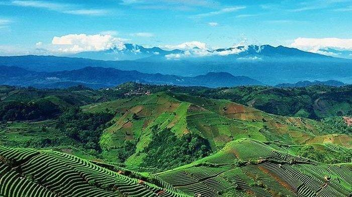
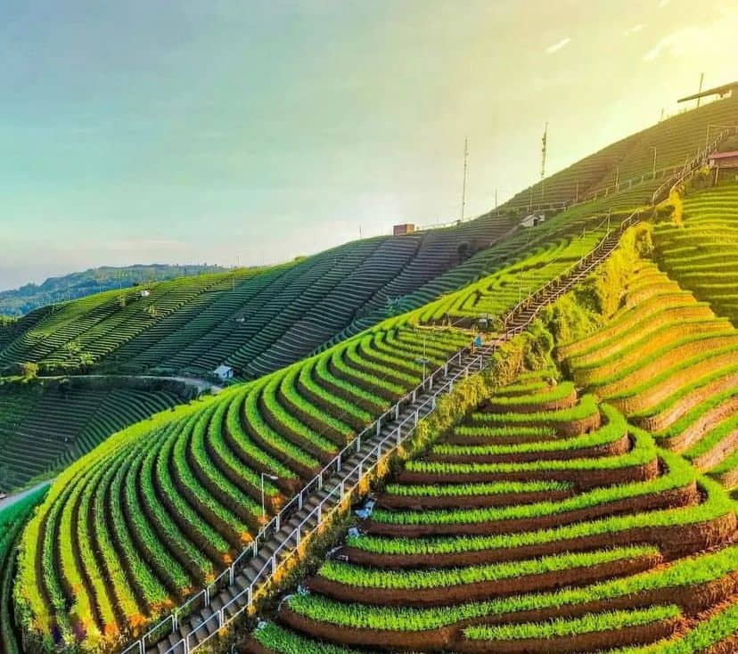

Sejarah

Nama “majalengka” berasal dari dua kata dalam bahasa Cirebon, yaitu “maja” dan “langka”. Namun, ada versi lain tentang asal usul dari kabupaten ini salah satunya dengan nama ini dengan peristiwa pembabatan pohon maja oleh Nyi
Rambut Kasih. Rambut Kasih merupakan ratu Kerajaan Sindangkasih yang tidak suka dengan orang Cirebon yang mencari buah maja untuk obat-obatan. Hal ini menjadi awal mula nama Majalengka.
Menurut versi ini, ketika orang Cirebon datang ke Sindangkasih, mereka tidak menemukan lagi pohon maja. Karena itu, mereka berkata “maja-e langka” atau “buah maja hilang”. Nama ini kemudian digunakan sebagai nama kabupaten baru
yang menggantikan Kerajaan Sindangkasih setelah penguasanya masuk Islam. Nama Majalengka kemudian masih digunakan hingga sekarang sejak ditetapkannya oleh koloni Belanda pada 11 Februari 1840.
Geografis

Secara geografis Kabupaten Majalengka terletak di bagian timur Provinsi Jawa Barat. Kabupaten Majalengka terletak pada titik koordinat yaitu Sebelah Barat 108° 03'–108° 19 Bujur Timur, Sebelah Timur 108° 12'–108° 25 Bujur Timur,
Sebelah Utara 6° 36'–5°58 Lintang Selatan dan Sebelah Selatan 6° 43'–7°44. Letak Kabupaten Majalengka yang terletak di bawah kaki Gunung Ciremai untuk wilayah dataran tinggi dan memanjang sampai wilayah dataran rendah yang
perbatasan dengan wilayah Kabupaten Indramayu.
Bagian utara wilayah kabupaten ini adalah dataran rendah, sedang di bagian selatan berupa pegunungan. Gunung Ciremai (3.076 m) berada di bagian timur, yakni di perbatasan dengan Kabupaten Kuningan. Gunung ini adalah gunung
tertinggi di Provinsi Jawa Barat, dan merupakan taman nasional, dengan nama Taman Nasional Gunung Ciremai
Wisata
Wisata Majalengka menjadi salah satu daerah di Jawa Barat yang memiliki banyak spot menarik untuk dikunjungi keluarga ataupun pasangan. Secara geografis, Majalengka ini terbagi menjadi dua bagian, yakni dataran rendah dan
dataran tinggi. Hal ini ini menjadikan Majalengka memiliki spot wisata yang beragam, terutama wisata alamnya.
Terasering Payaweuyan

Tak perlu jauh-jauh ke Bali untuk melihat terasering cantik yang asri! Hal ini karena di Majalengka juga ada, lho. Namanya adalah Terasering Panyaweuyan Argapura. Wisata Majalengka ini berada di Desa Argamukti, Kecamatan
Argapura. Jika melihat dari foto-fotonya, Terasering Panyaweuyan Argapura memang memiliki tampilan terasering yang tak kalah cantiknya dari terasering yang ada di Ubud, Bali. Untuk melihat pemandangan terasering yang apik ini,
Moms bisa melihatnya di pagi hari karena waktu terbaik melihatnya adalah pukul 06.00-08.00. Apabila berkunjung saat sore hari, Moms juga bisa menyaksikkan matahari terbenam. Pemandangan matahari terbenam di sini sangatlah
bagus. Hindari untuk datang di siang hari karena cuaca yang agak terik. Jika cuacanya mendung, akan ada kabut di siang hari yang bisa merusak pemandangan terasering di sini. Jadi lebih baik datang di pagi atau sore hari, ya!
Curug Ibun Pelangi

Curug Ibun Pelangi merupakan salah satu wisata Majalengka yang bisa menyegarkan mata dan pikiran karena keasriannya. Tempat wisata Majalengka ini berlokasi di Desa Sukadana, Majalengka. Awalnya, Curug Ibun Pelangi dikenal
dengan nama wisata Goa Lalay, lalu namanya berubah dan lebih dikenal dengan nama Curug Ibun Pelangi. Dinamakan wisata Goa Lalay karena memang di dekat curug ini terdapat goa yang dijuluki sebagai Green Canyon-nya Majalengka.
Di dalam Goa Lalay pemandangannya sangat indah sekali. Hal ini karena akan ada cahaya yang menyinari bagian dalam goa sehingga ketika diabadikan dalam jepretan foto akan terlihat cantik
Lokasi